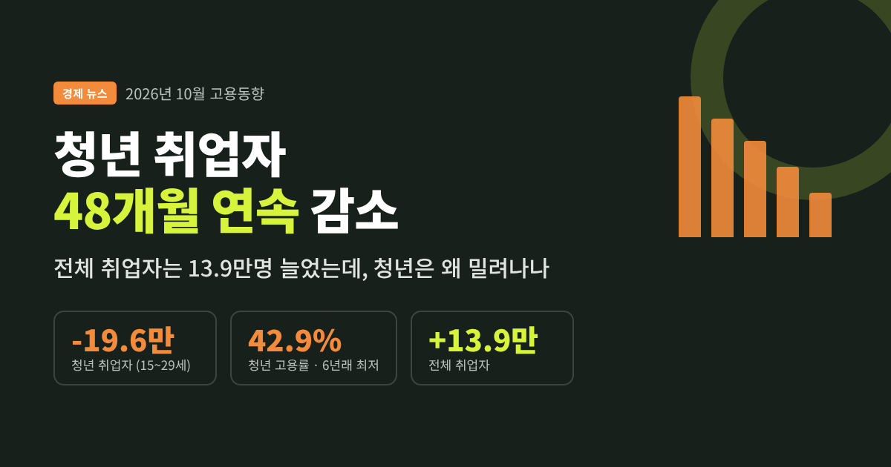
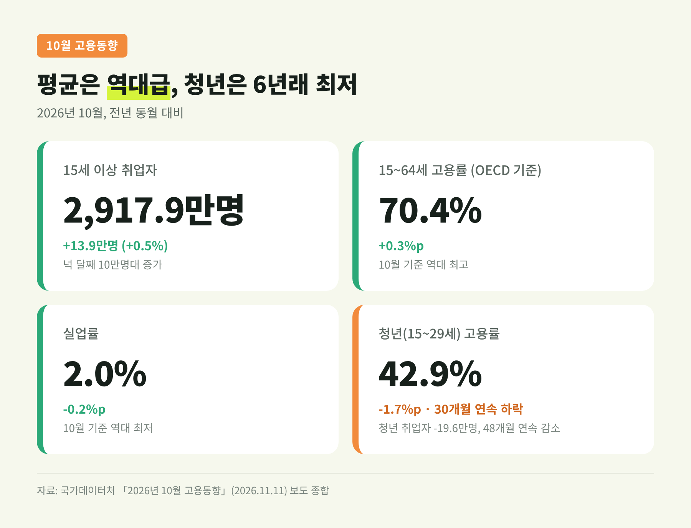
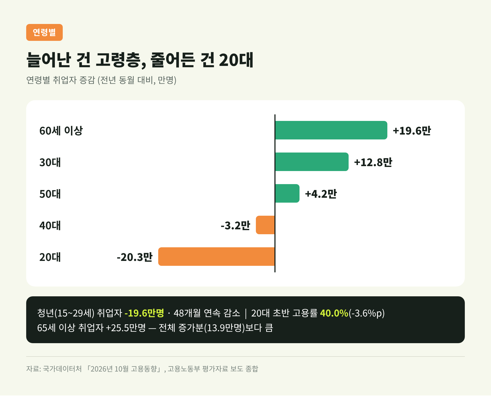
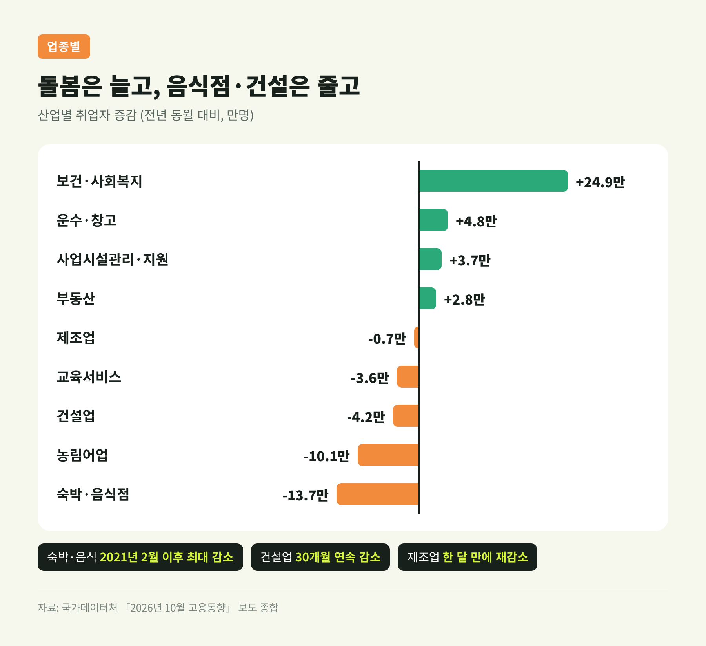
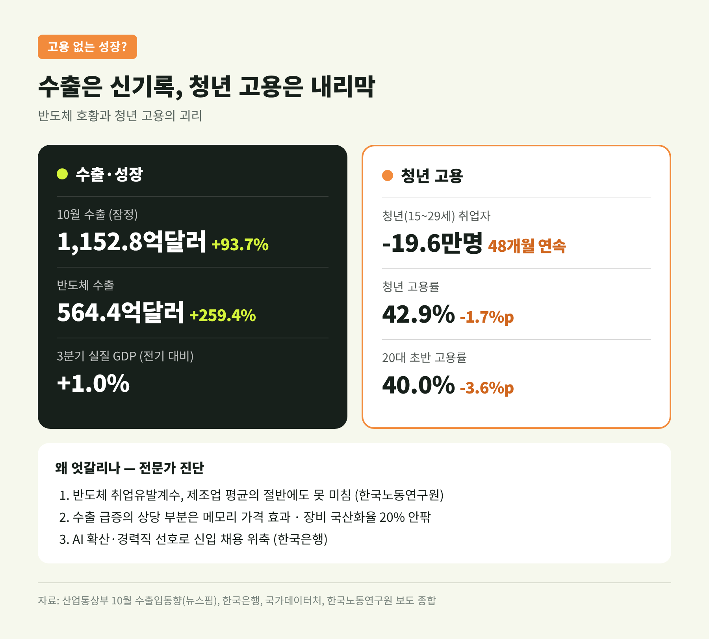
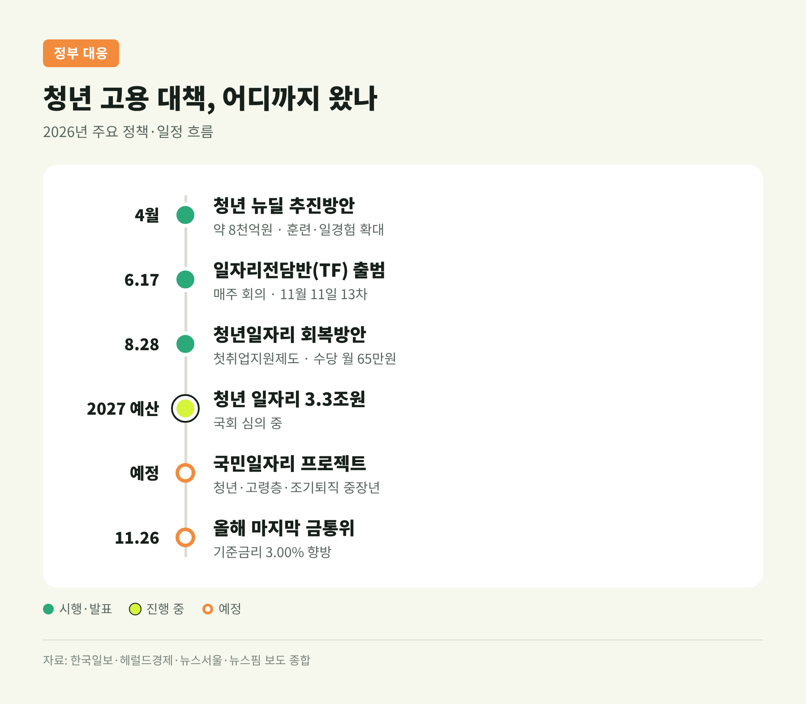

10월 고용동향, 청년 취업자 48개월째 감소…반도체 호황과 엇갈린 이유
이번 글에서는 11월 11일 국가데이터처가 발표한 '2026년 10월 고용동향'을 정리해 보겠습니다. 전체 취업자는 1년 전보다 13만 9천 명 늘었지만, 15~29세 청년 취업자는 48개월 연속 줄었습니다. 반도체 수출이 연일 기록을 쓰는데도 청년 일자리는 왜 반대로 가는지, 숫자와 배경을 차례로 짚어봅니다.
3줄 요약
- 10월 취업자 2,917만 9천 명(+13만 9천 명), 넉 달째 10만 명대 증가. 실업률 2.0%는 10월 기준 역대 최저입니다.
- 청년 취업자는 19만 6천 명 줄어 48개월 연속 감소, 청년 고용률 42.9%는 30개월째 하락해 6년 만에 가장 낮습니다.
- 증가분은 고령층·보건복지가 떠받쳤고, 반도체 호황은 고용으로 잘 번지지 않는다는 진단이 이어집니다.

■ 10월 고용동향, 무슨 일이 있었나
겉으로 보이는 숫자는 나쁘지 않습니다.
10월 15세 이상 취업자는 2,917만 9천 명입니다. 1년 전보다 13만 9천 명(0.5%) 늘었습니다. 5월에 감소로 돌아섰던 취업자는 6월(+6만 3천 명)부터 다시 늘기 시작했습니다. 7월 10만 8천 명, 8월 18만 4천 명, 9월 11만 3천 명에 이어 10월까지, 넉 달째 10만 명대 증가입니다.
다른 지표도 좋아 보입니다. OECD 비교 기준인 15~64세 고용률은 70.4%로, 1989년 통계 작성 이후 10월 기준 가장 높았습니다. 실업자는 60만 2천 명으로 5만 6천 명 줄었고, 실업률 2.0%는 1999년 이후 10월 기준 최저입니다.
다만 15세 이상 전체 고용률은 63.3%로 0.1%포인트 내려갔습니다. 비경제활동인구도 1,629만 9천 명으로 17만 9천 명 늘었습니다. 일하는 사람이 늘었다기보다, 일자리 시장 바깥에 머무는 사람도 함께 늘어난 달이었습니다.

■ 청년 고용, 숫자로 보면 더 무겁습니다
청년(15~29세) 취업자는 332만 5천 명입니다. 1년 전보다 19만 6천 명 줄었습니다. 2022년 11월부터 이어진 감소가 48개월, 꼬박 4년을 채웠습니다. 감소 폭도 9월(14만 7천 명)보다 커졌습니다.
인구가 줄어서라고만 보기는 어렵습니다. 같은 기간 청년 인구 감소는 14만 1천 명으로, 취업자 감소 폭보다 작습니다. 비율로 봐도 마찬가지입니다. 청년 고용률은 42.9%로 1.7%포인트 떨어졌습니다. 2024년 5월부터 30개월 연속 하락했고, 10월 기준으로는 2020년(42.3%) 이후 6년 만의 최저치입니다.
연령을 쪼개 보면 사회에 막 나서는 층이 가장 아픕니다. 고용노동부 자료에 따르면 20대 초반(20~24세) 고용률은 40.0%로 3.6%포인트 급락했습니다. 9월(41.9%, -2.7%포인트)보다 하락 폭이 더 커졌습니다. 20대 후반 고용률은 71.0%로 0.5%포인트 내려가는 데 그쳤습니다.
청년 실업률은 5.2%로 오히려 0.1%포인트 낮아졌습니다. 여기에는 착시가 섞여 있습니다. 청년 경제활동참가율이 45.2%로 1.9%포인트나 떨어졌기 때문입니다. 일자리를 구하는 사람 자체가 줄면 실업률은 내려갑니다. 여러 매체가 "실업률 하락을 고용 개선으로 보기 어렵다"고 짚은 이유입니다.
그나마 위안이 되는 지표도 있습니다. '쉬었음' 청년은 37만 1천 명으로 3만 8천 명 줄어, 9개월째 감소했습니다. 정부는 청년 뉴딜 이후 7~9월 취업 학원·훈련기관 수강생이 월평균 3만 명 늘었다는 점을 근거로, 쉬던 청년이 훈련 단계로 옮겨가고 있다고 봅니다. 그러나 전월(36만 4천 명)보다는 7천 명 늘어, 흐름이 확실히 꺾였다고 말하기는 이릅니다.

■ 업종별로 갈린 희비
증가분을 이끈 곳은 보건업 및 사회복지서비스업입니다. 1년 새 24만 9천 명(7.5%) 늘었습니다. 운수·창고업(+4만 8천 명), 사업시설관리·지원서비스업(+3만 7천 명), 부동산업(+2만 8천 명)이 뒤를 이었습니다.
줄어든 업종은 청년과 서민 일자리가 많은 곳에 몰렸습니다.
- 숙박·음식점업 -13만 7천 명: 3개월 연속 감소, 2021년 2월 이후 최대 감소 폭입니다. 정부는 지난해 하반기 소비쿠폰 효과에 따른 기저효과와 주류 소비 감소, 자영업 구조조정을 원인으로 꼽았습니다. 청년 아르바이트 수요가 큰 업종이라는 점이 뼈아픕니다.
- 농림어업 -10만 1천 명
- 건설업 -4만 2천 명: 2024년 5월부터 30개월 연속 감소입니다.
- 교육서비스업 -3만 6천 명
- 제조업 -7천 명: 9월에 27개월 만에 반등했지만 한 달 만에 다시 줄었습니다. 화학·금속가공은 늘고 섬유·자동차·의복은 줄었습니다.
연령별로 보면 구조가 더 선명합니다. 60세 이상이 19만 6천 명, 65세 이상만 따로 보면 25만 5천 명 늘었습니다. 전체 증가분(13만 9천 명)보다 고령층 증가가 더 큽니다. 반면 20대는 20만 3천 명, 40대는 3만 2천 명 줄었습니다. 30대(+12만 8천 명)와 50대(+4만 2천 명)는 늘었습니다.
고용의 형태도 엇갈렸습니다. 상용근로자는 28만 7천 명 늘었지만, 임시근로자는 10만 7천 명, 일용근로자는 5만 3천 명 줄었습니다. 고령층 돌봄 일자리가 늘고, 청년이 많이 몸담던 음식점·단기 일자리가 줄어든 그림입니다.

■ 왜 중요한가: 첫 일자리의 문이 좁아지고 있습니다
청년 고용 부진은 단순히 '취업자 수'의 문제가 아닙니다. 첫 일자리에서 경력을 쌓지 못하면, 경기가 좋아져도 좋은 자리로 옮기기 어렵기 때문입니다.
한국은행이 10월 26일 낸 '청년고용 부진 및 정책 과제' 보고서가 이 점을 짚었습니다. 고용 안정성·근로시간·실직 위험을 합친 '고용의 질 지수'를 보면, 청년층은 2014~2019년 평균 101.1에서 최근(2023년 1월~2026년 9월) 94.7로 떨어졌습니다. 같은 기간 30~59세(100.2→104.0)와 고령층(97.8→105.6)은 오히려 좋아졌습니다.
청년 임시·일용직 비중은 2022년 30.7%에서 올해 1~9월 32.6%로 높아졌습니다. 임시·일용직에서 상용직으로 옮겨가는 청년 비율은 8%대에서 5%대(2023~2024년)로 낮아졌습니다. 한 번 불안정한 자리에서 시작하면 빠져나오기가 그만큼 어려워졌다는 뜻입니다.
빈현준 국가데이터처 사회통계국장은 기업의 경력직 선호와 수시 채용 확산을 청년 고용률 하락의 배경으로 들었습니다. 한은은 여기에 AI 확산으로 초급·반복 업무가 자동화되는 흐름, 그리고 기존 정규직에 대한 높은 해고 보호(OECD 23개국 중 10위)가 신규 채용을 머뭇거리게 만드는 역설을 더했습니다.
예전엔 경기가 좋아지면 신입 공채부터 늘었습니다. 지금은 경기가 좋아져도 경력직을 먼저 찾습니다. 이 변화가 고용률 숫자 뒤에 숨어 있습니다.
■ 반도체 수출 호황과 '고용 없는 성장' 논쟁
이번 통계가 유독 주목받는 이유는 수출 지표와의 대비 때문입니다.
산업통상부 잠정 집계로 10월 수출은 1,152억 8천만 달러로 93.7% 늘었습니다. 두 달 연속 1,100억 달러를 넘었고, 월간 기준 역대 두 번째입니다. 반도체 수출은 564억 4천만 달러로 259.4% 급증했습니다. 1~10월 누적 수출은 약 9,300억 달러로, 11월 중 연간 1조 달러 돌파가 유력합니다. 다만 조업일수를 감안한 일평균 수출 증가율은 76%로 월간 증가율보다 낮습니다. 지난해 같은 달과의 조업일수 차이에 따른 기저효과가 섞여 있다는 뜻입니다.
성장률도 좋습니다. 한국은행 발표로 3분기 실질 GDP는 전기 대비 1.0% 늘었습니다. 그런데 고용은 이 온기를 따라가지 못합니다.
전문가들이 꼽는 이유는 크게 세 가지입니다.
- 반도체는 사람을 많이 쓰지 않는 산업입니다. 한국노동연구원은 반도체의 취업유발계수가 제조업 평균의 절반에도 못 미친다고 분석했습니다. 국가데이터처 관계자도 "대규모 설비투자 중심이라 생산 증가가 고용으로 이어지는 효과가 제한적"이라고 설명했습니다.
- 수출 급증의 상당 부분은 가격 효과입니다. 노동연은 메모리 가격 상승이 수출액을 끌어올린 만큼 실질 생산·고용 증가는 그에 못 미친다고 봤습니다. 반도체 장비 국산화율이 20% 안팎에 그쳐 호황이 협력업체로 넓게 퍼지지 못한다는 점도 지적했습니다.
- 혜택이 대기업에 몰립니다. KDI는 "체감 경기는 이 수치를 따라가지 못할 것"이라며, 반도체 기업은 대기업인 반면 근로자 대다수는 중소기업·자영업에 있다고 설명했습니다.
현대경제연구원에서도 "반도체와 AI 중심의 성장은 착시를 일으키기 쉽다"는 경고가 나왔습니다(주원, KPI뉴스 인용). 수출은 치솟고 내수와 고용은 처지는 'K자형' 흐름이라는 진단입니다.
물론 반론의 여지도 있습니다. OECD 기준 고용률이 역대 최고이고 상용직이 늘었다는 점은, 전체 고용의 질이 무너졌다고 보기 어렵다는 근거입니다. 제조업 역시 국가데이터처는 6~9월 생산지수가 양호했던 만큼 더 지켜봐야 한다는 입장입니다. 제 해석으로는, '고용 없는 성장'이라기보다 '청년을 비켜 간 성장'이라는 표현이 이번 통계에 더 가깝습니다.

■ 금리와 경기, 고용에는 어떤 영향이 있나
통화정책 환경도 청년 고용에 우호적이지만은 않습니다.
한국은행은 7월과 8월 두 차례 기준금리를 0.25%포인트씩 올려 연 3.00%로 만들었습니다. 10월 22일 회의에서는 만장일치로 동결했습니다. 11월 10일 공개된 의사록에서 금통위원들은 반도체 수요와 고유가로 물가 압력이 커졌다고 평가했습니다. 동시에 내수 회복이 더디고, 반도체 주도 성장의 파급이 넓지 않다는 우려도 나왔습니다.
금리 인상은 물가에는 브레이크지만, 내수 업종과 중소기업의 채용 여력에는 부담이 됩니다. 숙박·음식점업과 건설업이 동시에 부진한 상황이라면 더욱 그렇습니다. 올해 마지막 금통위는 11월 26일입니다. 추가 인상 여부가 고용 측면에서도 관심을 끄는 이유입니다.
■ 정부 대응, 어디까지 왔나
정부도 손을 놓고 있지는 않습니다. 6월 17일부터 재정경제부 1차관과 고용노동부 차관이 주재하는 일자리전담반(TF)을 매주 열었고, 11월 11일 회의가 올해 13번째였습니다.
권대영 재정경제부 1차관은 이 자리에서 일자리를 "수출 중심 경제성장의 온기를 내수와 민생으로 흐르게 하는 가장 중요한 통로이자 혈맥"이라고 표현했습니다. 취약계층이 체감하는 일자리 여건 개선을 최우선 과제로 삼겠다는 입장입니다.
올해 정책 흐름은 아래와 같습니다.
- 4월 '청년 뉴딜 추진방안': 약 8천억 원 규모로 훈련·일경험 확대.
- 8월 28일 '청년일자리 회복방안': 2030년까지 첨단·청년선호 분야 전문인력 30만 명 이상 양성, 취업 경험이 없는 청년까지 지원하는 '청년 첫취업지원제도' 도입, 구직촉진수당 월 60만 원→65만 원 인상, 청년일자리도약장려금 대상 확대 등이 담겼습니다.
- 2027년 예산안: 청년 일자리 예산 3조 3천억 원 반영.
- 예정 — '국민일자리 프로젝트': 청년·고령층·조기퇴직 중장년을 대상으로 AI 전환(AX) 관련 직업훈련을 포함한 추진방안을 조만간 내놓을 계획입니다.
한계도 분명합니다. TF가 13번 열리는 사이에도 청년 취업자는 줄었습니다. 한은은 일자리 사업 확대 같은 공급 중심 대책만으로는 한계가 있다며, IT 제조업의 고용 파급력 제고와 교육-산업 연계, 노동시장 유연성 개선을 함께 주문했습니다. 훈련 인원이 늘어난 것이 실제 취업으로 이어질지는 내년 지표로 확인해야 합니다.

■ 앞으로의 전망: 11월 지표와 내년이 갈림길
전망 기관들의 숫자는 엇갈립니다.
KDI는 8월 수정 전망에서 올해 성장률을 3.2%로 0.7%포인트 올렸습니다. 이 가운데 약 0.6%포인트가 반도체 몫입니다. 반면 올해 취업자 증가 전망은 17만 명에서 11만 명으로 낮췄습니다. 내년 취업자 증가는 기저효과와 내수 회복을 근거로 20만 명으로 올려 잡았습니다.
한국노동연구원은 더 보수적이었습니다. 올해 취업자 증가 전망을 21만 명에서 10만 3천 명으로 거의 절반 낮췄고, 하반기 증가 폭을 9만 8천 명으로 봤습니다. 7~10월 실적은 이보다 다소 나은 흐름입니다만, 청년층만 놓고 보면 개선 신호를 찾기 어렵습니다.
당장 지켜볼 일정은 다음과 같습니다.
- 11월 26일 금통위: 기준금리 3.00%의 추가 인상 여부.
- 12월 중순 11월 고용동향: 청년 취업자 감소가 49개월로 이어지는지, 제조업이 다시 플러스로 돌아서는지.
- 국민일자리 프로젝트 발표와 2027년 예산안 국회 심의: 청년 예산 3조 3천억 원이 원안대로 확정되는지.
- 연간 수출 1조 달러 돌파: 수출 성과가 내수·고용으로 얼마나 흘러드는지.
제 해석을 덧붙이면, 내년 지표의 핵심은 '전체 취업자 수'보다 '20대 초반 고용률'과 '임시·일용직에서 상용직으로의 이동'에 있다고 봅니다. 이 두 숫자가 움직여야 청년이 체감하는 변화가 생기기 때문입니다.
정리하면 이렇습니다. 10월 고용동향은 평균의 착시를 잘 보여준 통계입니다. 고용률은 역대 최고, 실업률은 역대 최저인데, 막 사회에 나서는 청년의 자리는 4년째 줄고 있습니다.
"성장의 온기는 아직 청년의 첫 일자리까지 닿지 않았습니다."
반도체 호황이 길어질수록 이 간극을 메우는 일은 더 미룰 수 없는 과제가 될 것입니다. 다음 달 지표가 이 흐름을 바꿀 수 있겠냐고 물으신다면, 아직은 조심스럽게 지켜보자고 답하겠습니다.
본 글은 정보 제공 목적으로 작성되었으며, 특정 자산·종목에 대한 투자 권유가 아닙니다. 수치는 국가데이터처·관계 부처 발표를 인용한 언론 보도를 교차확인한 것이며, '제 해석'으로 표시한 부분은 필자의 견해입니다.
참고 자료
- 뉴스1(파이낸셜뉴스 게재), 취업자 넉달째 10만명대↑…청년 고용률은 30개월째↓ 6년래 최저 (2026-11-11)
- 한국경제, 10월 취업자 13.9만명 증가…청년층은 48개월째 감소 (2026-11-11)
- 헤럴드경제, 10월 취업자 13.9만명 늘었지만 청년고용 48개월째 뒷걸음 (2026-11-11)
- 한국일보, '쉬었음' 아닌 '당했음'… 일자리 TF 13번 열어도 청년 취업 48개월 연속 감소 (2026-11-11)
- 스트레이트뉴스, 청년 고용률 30개월째 하락…취업자 14만명 늘어도 청년 일자리 '한파' (2026-11-11)
- 피앤피뉴스, 10월 취업자 늘었지만 청년 고용은 뒷걸음질…20대 초반 고용률 40%까지 하락 (2026-11-11)
- 뉴스핌, 10월 수출 1153억달러 '역대 2위'…반도체 564억달러 견인 (2026-11-01)
- 뉴데일리, 반도체는 호황인데 청년 일자리는 악화 … 한은이 짚은 성장의 그늘 (2026-10-26)
- 뉴스핌, 반도체 호황에 경제지표 호조인데...청년 고용은 '악화' (2026-10-28)
- 뉴스핌, 10월 금통위 만장일치 동결…물가 압력에 추가 긴축 '저울질' (2026-11-10)
- 아이뉴스24, KDI, 올 성장률 3.2%로 대폭 상향…"반도체 초호황, 체감경기 못 미쳐" (2026-08-19)
- 머니투데이, 올 상반기 취업자 증가, 전망치 절반 수준…"반도체 파급효과 한계" (2026-08-06)
- 뉴스서울, 재정경제부 '청년일자리 회복방안' 발표 (2026-08-28)
- KPI뉴스, AI가 만든 반도체 호황, AI가 삼킨 청년 일자리…'고용 없는 성장'의 역습 (2026-06-11)
#10월고용동향 #청년고용률 #청년취업자 #고용없는성장 #반도체수출 #쉬었음청년 #국가데이터처 #경제뉴스